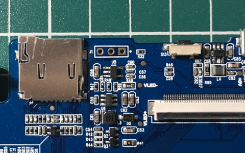
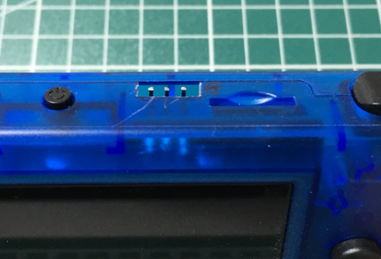

J1就是UART輸出腳位(GND、RX、TX)


U-Boot SPL 2013.07 (Nov 17 2019 - 21:50:26)
U-Boot 2013.07 (Nov 17 2019 - 21:50:26)
Board: GKD350
DRAM: 128 MiB
Now running in RAM - U-Boot at: 87fe4000
MMC: msc: 0
*** Warning - bad CRC, using default environment
In: serial
Out: serial
Err: serial
## Booting kernel from Legacy Image at 80600000 ...
Verifying Checksum ... OK
Uncompressing Kernel Image ... OK
Starting kernel ...